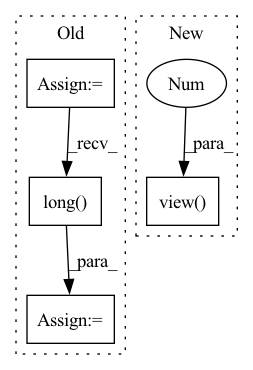

Pattern ID :23931
Before Change
// relation 特殊表示
index_ = torch.arange(self.start_idx, self.start_idx+num_relations).to(self.device)
index_ = index_.expand(batch_size, num_relations)
// 需要拼接的部分1：REL， 选取拼接的部分
relation_output_sigmoid_number = torch.masked_select(index_, relation_output_sigmoid_.bool())
// 需要拼接的部分2：SEP
cat_sep = torch.full((relation_output_sigmoid_number.shape[0], 1), 102).long().to(self.device)
// 需要拼接的部分3：[1]
cat_one = torch.full((relation_output_sigmoid_number.shape[0], 1), 1).long().to(self.device)
// 需要拼接的部4：[0]
cat_zero = torch.full((relation_output_sigmoid_number.shape[0], 1), 0).long().to(self.device)
// 需要原来的input_ids 扩展到relation num维度。
input_ids_ner = torch.unsqueeze(inputs["input_ids"], 1)
// [batch_size, 50, max_length], 复制50份
input_ids_ner = input_ids_ner.expand(-1, len(self.label_map_seq.keys()), -1)
// [batch_size * 50, max_length]
input_ids_ner_reshape = input_ids_ner.reshape(batch_size * num_relations, max_length)
// 选择预测正确的所有关系
tmp1 = relation_output_sigmoid_index.unsqueeze(dim=1) // [200, 1]
mask = tmp1.expand(-1, max_length) // [200, 79]
tmp2 = torch.masked_select(input_ids_ner_reshape, mask.bool())
// n(选出来的关系数字) * max_length
// n >> batch_size, 因为一句话中有多个关系
tmp3 = tmp2.view(-1, max_length)
// 拼接 0
tmp4 = torch.cat((tmp3, cat_zero), 1)
// 拼接 0
input_ids_ner = torch.cat((tmp4, cat_zero), 1)
// 利用attention中1的求和的到rel_pos的位置
attention_mask_ner = torch.unsqueeze(inputs["attention_mask"], 1)
// [batch_size, 50, max_length], 复制50份
attention_mask_ner = attention_mask_ner.expand(-1, len(self.label_map_seq.keys()), -1)
// [batch_size * 50, max_length]
attention_mask_ner_reshape = attention_mask_ner.reshape(batch_size * num_relations, max_length)
// 选择预测正确的所有关系
tmp1 = relation_output_sigmoid_index.unsqueeze(dim=1) // [200, 1]
mask = tmp1.expand(-1, max_length) // [200, 79]
tmp2 = torch.masked_select(attention_mask_ner_reshape, mask.bool())
// n(选出来的关系数字) * max_length
// n >> batch_size, 因为一句话中有多个关系
tmp3 = tmp2.view(-1, max_length)
// 利用attention中1的求和的到rel_pos的位置
rel_pos = torch.sum(tmp3, dim=1)
(rel_number_find, max_length_find) = input_ids_ner.shape
one_hot = torch.sparse.torch.eye(max_length_find).long().to(self.device)
rel_pos_mask = one_hot.index_select(0, rel_pos)
rel_pos_mask_plus = one_hot.index_select(0, rel_pos+1)
// 拼接input_ids的输入
input_ids_ner[rel_pos_mask.bool()] = relation_output_sigmoid_number
input_ids_ner[rel_pos_mask_plus.bool()] = cat_sep.squeeze()
// 拼接token_type_ids的输入
token_type_ids_ner = torch.zeros(rel_number_find, max_length_find).to(self.device)
token_type_ids_ner[rel_pos_mask.bool()] = 1
token_type_ids_ner[rel_pos_mask_plus.bool()] = 1
token_type_ids_ner = token_type_ids_ner.long()
// 拼接attention_mask的输入
// 拼接 0
tmp4 = torch.cat((tmp3, cat_zero), dim=1)
// 拼接 0
tmp5 = torch.cat((tmp4, cat_zero), dim=1)
tmp5[rel_pos_mask.bool()] = 1
tmp5[rel_pos_mask_plus.bool()] = 1
attention_mask_ner_tmp = tmp5
inputs_ner = {
"input_ids": input_ids_ner,
"token_type_ids": token_type_ids_ner,
"attention_mask": attention_mask_ner_tmp,
}
try:
outputs_ner = self.model_ner(**inputs_ner)[0]
except BaseException:
print("23")
_, results = torch.max(outputs_ner, dim=2)
results_np = results.cpu().numpy()
attention_position_np = rel_pos.cpu().numpy()
results_list = results_np.tolist()
attention_position_list = attention_position_np.tolist()
predict_relation_list = relation_output_sigmoid_number.long() .tolist()
input_ids_list = input_ids_ner.tolist()
processed_results_list = []After Change
// 选择预测正确的所有关系
mask = mask_output.unsqueeze(dim=1).expand(-1, max_length) // [batch_size * num_relations, max_length]
// 选取了正确的input_ids
input_ids = torch.masked_select(input_ids_ner_reshape, mask.bool()).view(-1 , max_length)
// n(选出来的关系数字) * max_length
// n >> batch_size, 因为一句话中有多个关系
// 添加 sep relation_ids 需要增加的东西
input_ids = torch.cat((input_ids, cat_zero), 1)In pattern: SUPERPATTERN
Frequency: 4
Non-data size: 4
Instances Fragment ID: 74425626
Project Name: zjunlp/openue
Commit Name: aab5c330dc47a5099aaf25907950602ab8e8b652
Time: 2021-09-14
Author: 852975133@qq.com
File Name: src/openue/models/model.py
M Class Name: Inference
N Class Name: Inference
M Method Name: forward(2)
N Method Name: forward(2)
M Parent Class: torch.nn.Module
N Parent Class: torch.nn.Module
M File Name: src/openue/models/model.py
N File Name: src/openue/models/model.py
M Start Line: 225
M End Line: 331
N Start Line: 220
N End Line: 324
Before Change
)
for sample_idx in range(context.num_samples):
// Get correct repetition
r = context.repetition_indices[sample_idx]
// Get correct parent_indices
parent_indices_out = parent_indices[sample_idx]
// Get scope for the current repetition
scope = self.scopes[:, :, r]
// Turn one-hot encoded in-feature -> out-feature mapping into a linear index
rnge_in = torch.arange(self.out_features, device=samples.device)
scope = (scope * rnge_in).sum(-1).long()
// Map parent_indices from original "out_features" view to "in_feautres" view
parent_indices_in = parent_indices_out[scope]
After Change
// assert (indices_in_tmp == indices_in_gather).all()
indices_in_gather = indices_in_gather.view( num_samples, 1, -1, 1 ) .expand(-1, samples.shape[1], -1, -1)
samples = samples.gather(dim=-1, index=indices_in_gather)
samples.squeeze_(-1) // Remove num_leaves dimension
Fragment ID: 74425625
Project Name: braun-steven/simple-einet
Commit Name: e657fc668bd0f87f5e622a8b2549cd9e8ade437a
Time: 2022-01-11
Author: steven.lang.mz@gmail.com
File Name: simple_einet/factorized_leaf_layer.py
M Class Name: FactorizedLeaf
N Class Name: FactorizedLeaf
M Method Name: sample(3)
N Method Name: sample(3)
M Parent Class: AbstractLayer
N Parent Class: AbstractLayer
M File Name: simple_einet/factorized_leaf_layer.py
N File Name: simple_einet/factorized_leaf_layer.py
M Start Line: 63
M End Line: 120
N Start Line: 68
N End Line: 147
Before Change
], device=targets.device).float() * g // offsets
for i in range(self.nl):
anchors = self.anchors[i]
gain[2:6] = torch.tensor(p[i].shape)[[3, 2, 3, 2]] // xyxy gain
// Match targets to anchors
t = targets * gain
if nt:
// Matches
r = t[:, :, 4:6] / anchors[:, None] // wh ratio
j = torch.max(r, 1. / r).max(2)[0] < self.hyp["anchor_t"] // compare
// j = wh_iou(anchors, t[:, 4:6]) > model.hyp["iou_t"] // iou(3,n)=wh_iou(anchors(3,2), gwh(n,2))
t = t[j] // filter
// Offsets
gxy = t[:, 2:4] // grid xy
gxi = gain[[2, 3]] - gxy // inverse
j, k = ((gxy % 1. < g) & (gxy > 1.)).T
l, m = ((gxi % 1. < g) & (gxi > 1.)).T
j = torch.stack((torch.ones_like(j), j, k, l, m))
t = t.repeat((5, 1, 1))[j]
offsets = (torch.zeros_like(gxy)[None] + off[:, None])[j]
else:
t = targets[0]
offsets = 0
// Define
b, c = t[:, :2].long().T // image, class
gxy = t[:, 2:4] // grid xy
gwh = t[:, 4:6] // grid wh
gij = (gxy - offsets).long()
gi, gj = gij.T // grid xy indices
// Append
a = t[:, 6].long() // anchor indices
indices.append((b, a, gj.clamp_(0, gain[3] - 1), gi.clamp_(0, gain[2] - 1))) // image, anchor, grid indices
tbox.append(torch.cat((gxy - gij, gwh), 1)) // box
anch.append(anchors[a]) // anchorsAfter Change
// Define
bc, gxy, gwh, a = t.chunk(4, 1) // (image, class), grid xy, grid wh, anchors
a, (b, c) = a.long().view(-1 ) , bc.long().T // anchors, image, class
gij = (gxy - offsets).long()
gi, gj = gij.T // grid indices
Fragment ID: 74425637
Project Name: bobo-y/flexible-yolov5
Commit Name: 9fb058ef7b7925a243a436788f3f55dbb4b3e263
Time: 2022-07-02
Author: yl305237731@gmail.com
File Name: od/models/loss/yolo.py
M Class Name: ComputeLoss
N Class Name: ComputeLoss
M Method Name: build_targets(3)
N Method Name: build_targets(3)
M Parent Class:
N Parent Class:
M File Name: od/models/loss/yolo.py
N File Name: od/models/loss/yolo.py
M Start Line: 167
M End Line: 211
N Start Line: 178
N End Line: 226